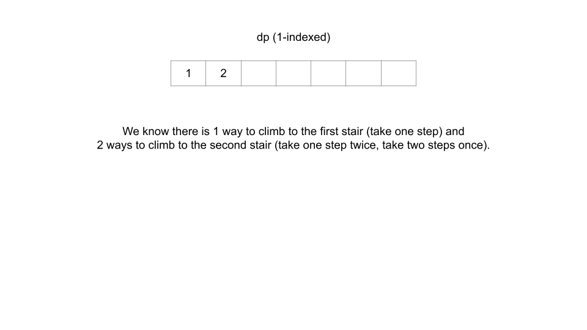
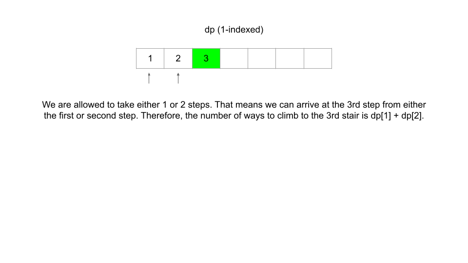
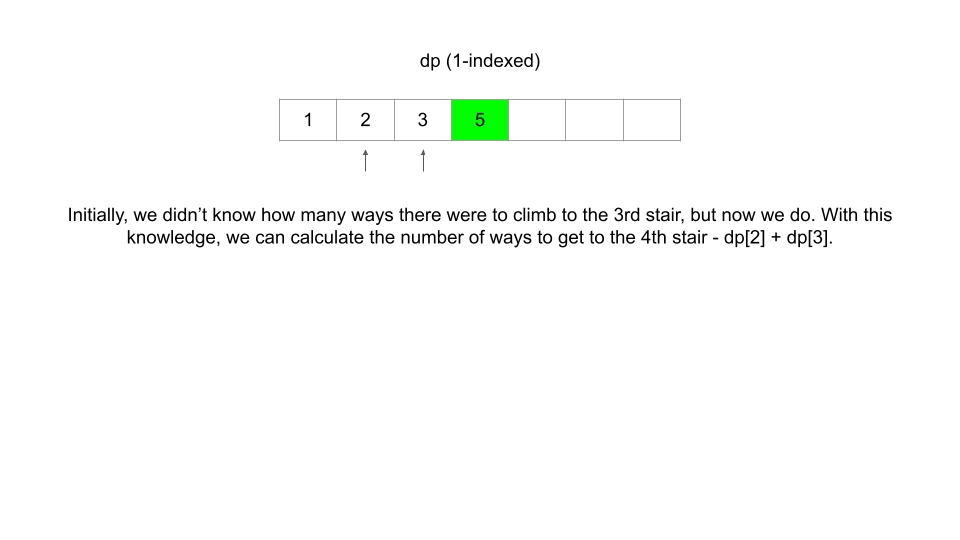
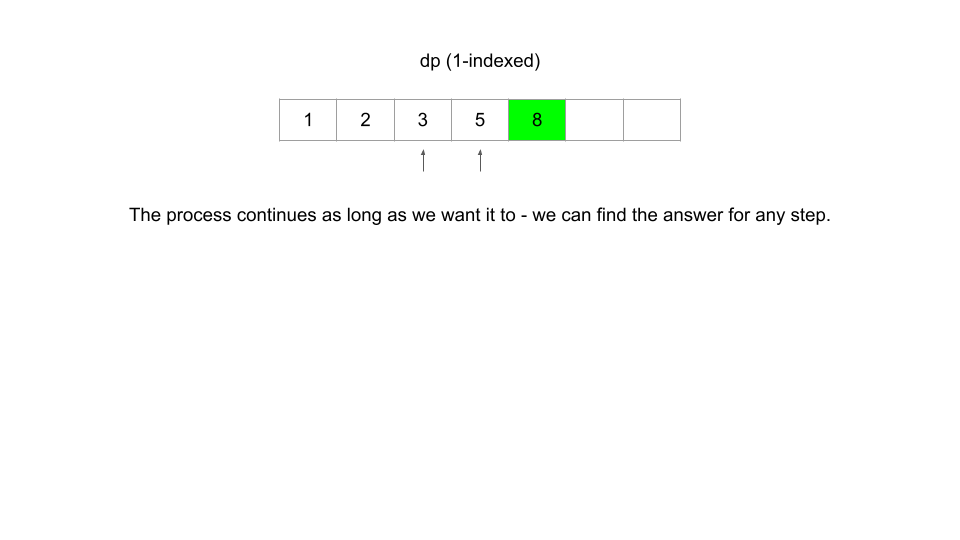
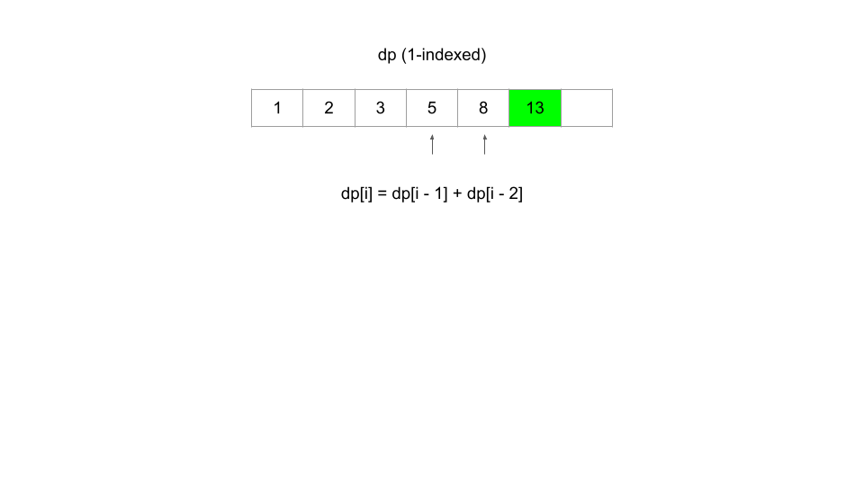
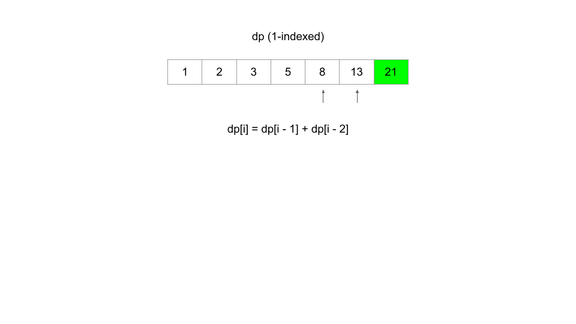

Теперь, когда мы понимаем основы ДП и как определить, когда ДП применима к проблеме, мы достигли самой важной части: фактического решения проблемы. В этом разделе мы поговорим о системе решения проблем DP. Эта структура применима практически к любой проблеме DP и обеспечивает четкий пошаговый подход к разработке алгоритмов DP.
Для пояснения в этой статье мы собираемся использовать задачу «Подъем по лестнице» в качестве примера с нисходящей (рекурсивной) реализацией. Найдите минутку, чтобы прочитать описание проблемы и понять, о чем она спрашивает.
Прежде чем мы начнем, нам нужно сначала определить термин: состояние. В задаче DP состояние — это набор переменных, которые могут в достаточной степени описать сценарий. Эти переменные называются переменными состояния, и нас интересуют только те, которые имеют отношение к делу. Например, для описания каждого сценария в «Подъеме по лестнице» существует только одна соответствующая переменная состояния — текущий шаг, на котором мы находимся. Мы можем обозначить это целым числом i. Если i = 6, это означает, что мы описываем состояние бытия на 6-м шаге. Каждое уникальное значение i представляет собой уникальное состояние.
Вам может быть интересно, что здесь означает «релевантный». Представьте себе эту проблему в реальной жизни: вы находитесь на лестнице и хотите знать, сколькими способами можно подняться, скажем, на 10-ю ступеньку. Нам определенно интересно, на какой ступени вы сейчас находитесь. Однако нас не интересует, какого цвета ваши носки. Конечно, вы можете включить цвет носка в качестве переменной состояния. Стоять на 8-й ступеньке в зеленых носках — это другое состояние, чем стоять на 8-й ступеньке в красных носках. Однако изменение цвета носков не изменит количество способов добраться до 10-го шага от вашего текущего положения. Таким образом, цвет ваших носков не имеет значения. Чтобы выяснить, сколькими способами можно подняться по лестнице, единственной значимой переменной является то, на какой лестнице вы находитесь в данный момент.
Чтобы решить проблему ДП, нам нужно объединить 3 вещи:
Предположим, что для подъема по лестнице у нас есть функция dp, где dp(i) возвращает количество способов подняться на лестницу. i-й шаг. Решить исходную задачу было бы так же просто, как верните dp(n).
Как мы принимали решение о дизайне функции? Задача состоит в том, чтобы задать вопрос: «Сколько различных способов вы можете подняться на вершину?», поэтому мы решаем, что функция будет представлять, сколькими различными способами вы можете подняться на определенную ступеньку — буквально исходная задача, но обобщенная для данного состояния.
Обычно метод «сверху вниз» реализуется с помощью рекурсивной функции и хэш-карты, тогда как метод «снизу вверх» реализуется с помощью вложенных циклов for и массива. При разработке этой функции или массива нам также необходимо выбрать переменные состояния, которые будут передаваться в качестве аргументов. Эта проблема очень проста, поэтому все, что нам нужно для описания состояния, — это знать, на каком шаге i мы сейчас находимся. Позже мы увидим, что другие проблемы имеют более сложные состояния.
Рекуррентное соотношение — это уравнение, которое связывает различные состояния друг с другом. Допустим, нам нужно было найти, сколькими способами мы можем подняться на 30-ю ступеньку. Итак, задача состоит в том, что нам разрешено делать либо 1, либо 2 шага за раз. Логично, что значит подняться на 30-ю ступеньку, мы пришли либо с 28-й, либо с 29-й ступеньки. Следовательно, количество способов подняться на 30-ю ступеньку равно числу способов подняться на 28-ю ступеньку плюс число способов подняться на 29-ю ступеньку.
Проблема в том, что мы не знаем, сколько существует способов подняться на 28-ю или 29-ю ступеньку. Однако мы можем использовать приведенную выше логику для определения рекуррентного отношения. В этом случае, dp(i) = dp(i - 1) + dp(i - 2). Как видите, информация о некоторых состояниях дает нам информацию о других состояниях.
При внимательном рассмотрении мы видим, что эта проблема на самом деле является замаскированной последовательностью Фибоначчи! Это очень простое рекуррентное соотношение. Обычно нахождение рекуррентного соотношения является самой сложной частью решения задачи ДП. Позже мы увидим, что некоторые рекуррентные отношения намного сложнее, и поговорим о том, как их вывести.
Уравнение dp(i) = dp(i - 1) + dp(i - 2) само по себе будет продолжаться вечно до отрицательной бесконечности. Нам нужны базовые случаи, чтобы функция в конечном итоге возвращала фактическое число.
Поиск базовых случаев часто является самой простой частью решения проблемы DP и требует лишь небольшого количества логического мышления. Придумывая базовый вариант(ы), спросите себя: на какое состояние(я) я могу найти ответ без использования динамического программирования? В этом примере мы можем рассуждать, что существует только 1 способ подняться на первую ступеньку (1 ступенька один раз) и 2 способа подняться на вторую ступеньку (1 ступенька дважды и 2 ступеньки один раз). Таким образом, наши базовые случаи dp(1) = 1 и dp(2) = 2.
Выше мы говорили, что не знаем, сколько существует способов подняться на 28-ю и 29-ю лестницу. Однако, используя эти базовые случаи и рекуррентное соотношение из шага 2, мы можем выяснить, сколько существует способов подняться на третью ступеньку. Имея эту информацию, мы сможем узнать, сколькими способами можно подняться на четвертую ступеньку и так далее. Со временем мы узнаем, сколько существует способов подняться на 28-ю и 29-ю лестницу.
Вот базовая реализация сверху вниз с использованием трех компонентов фреймворка:
def dp(i):
"""A function that returns the answer to the problem for a given state."""
# Base cases: when i is less than 3 there are i ways to reach the ith stair.
if i <= 2:
return i
# If i is not a base case, then use the recurrence relation.
return dp(i - 1) + dp(i - 2)
return dp(n)
Вы заметили, что в коде чего-то не хватает? Мы ничего не запомнили! Приведенный выше код имеет временную сложность O(2n), потому что каждый вызов dp создает еще 2 вызова dp. Если бы мы хотели узнать, сколько существует способов подняться на 250-ю ступеньку, количество операций, которые нам пришлось бы совершить, примерно равнялось бы количеству атомов во Вселенной.
Фактически, без мемоизации это не динамическое программирование, а просто базовая рекурсия. Только после того, как мы оптимизируем наше решение, добавив мемоизацию, чтобы избежать повторных вычислений, его можно будет назвать DP. Как объяснялось в главе 1, мемоизация означает кэширование результатов вызовов функций и последующее обращение к этим результатам в будущем вместо их пересчета. Обычно это делается с помощью хэш-карты или массива.
def dp(i):
if i <= 2:
return i
if i not in memo:
# Instead of just returning dp(i - 1) + dp(i - 2), calculate it once and then
# store the result inside a hashmap to refer to in the future.
memo[i] = dp(i - 1) + dp(i - 2)
return memo[i]
memo = {}
return dp(n)
Благодаря мемоизации наша временная сложность падает до O(n) – буквально астрономически лучше.
Вы можете заметить, что хэш-карта здесь излишня для кэширования, и вместо нее можно использовать массив. Это правда, но использование хэш-карты не обязательно является плохой практикой, поскольку некоторые проблемы DP потребуют ее, и их легко использовать, поскольку вам не нужно беспокоиться о правильном размере массива. Более того, при использовании нисходящего DP некоторые проблемы не требуют от нас решения каждой отдельной подзадачи, и в этом случае массив может использовать больше памяти, чем хэш-карта.
Мы только что много говорили о восходящем направлении, а как насчет восходящего? Все практически то же самое, за исключением того, что мы начнем с наших базовых случаев и дойдем до окончательного ответа. Как говорилось ранее, реализации снизу вверх обычно используют массив, поэтому мы будем использовать массив. dp, где dp[i] представляет количество способов подняться на i-ю ступеньку.
if n == 1:
return 1
# An array that represents the answer to the problem for a given state
dp = [0] * (n + 1)
dp[1] = 1 # Base cases
dp[2] = 2 # Base cases
for i in range(3, n + 1):
dp[i] = dp[i - 1] + dp[i - 2] # Recurrence relation
return dp[n]
Обратите внимание, что реализация по-прежнему точно соответствует структуре — структура справедлива как для нисходящих, так и для восходящих реализаций.
В задачах DP мы можем использовать логическое мышление, чтобы найти ответ на исходную задачу для определенных входных данных. В этом случае мы рассуждаем, что существует 1 способ подняться на первую ступеньку и 2 способа подняться на вторую ступеньку. Затем мы можем использовать рекуррентное отношение, чтобы найти ответ на исходную задачу для любого состояния, в данном случае для любого номера лестницы. Нахождение рекуррентного отношения предполагает размышление о том, как переход из одного состояния в другое меняет ответ на проблему.
В этом суть динамического программирования. Вот быстрая анимация подъема по лестнице:






В оставшейся части карты исследования мы собираемся использовать структуру для решения нескольких примеров, одновременно объясняя мыслительный процесс, лежащий в основе применения структуры на каждом этапе. Возможно, будет полезно вернуться к разделу этой статьи под названием «Структура» по мере продвижения по карте. А пока сделайте глубокий вдох — это было очень много, но вскоре вы будете готовы начать решать проблемы DP самостоятельно.